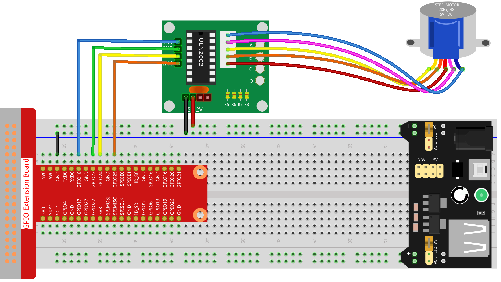

Nota
Ciao, benvenuto nella Community di SunFounder Raspberry Pi & Arduino & ESP32 Enthusiasts su Facebook! Approfondisci le tue conoscenze su Raspberry Pi, Arduino ed ESP32 insieme ad altri appassionati.
Perché Unirsi?
Supporto Esperto: Risolvi problematiche post-vendita e sfide tecniche con l’aiuto della nostra comunità e del nostro team.
Impara e Condividi: Scambia consigli e tutorial per migliorare le tue competenze.
Anteprime Esclusive: Ottieni accesso anticipato a nuovi annunci di prodotti e anticipazioni.
Sconti Speciali: Goditi sconti esclusivi sui nostri ultimi prodotti.
Promozioni Festive e Giveaway: Partecipa a giveaway e promozioni speciali durante le festività.
üëâ Pronto per esplorare e creare con noi? Clicca [Qui] e unisciti oggi stesso!
1.3.3 Motore Passo-passo
Introduzione
I motori passo-passo, grazie al loro design unico, possono essere controllati con un alto grado di precisione senza necessità di meccanismi di feedback. L’albero di un motore passo-passo, montato con una serie di magneti, è controllato da una serie di bobine elettromagnetiche che si caricano positivamente e negativamente in una sequenza specifica, muovendolo in avanti o indietro a piccoli «passi».
Componenti

Principio
Motore Passo-passo
Esistono due tipi di motori passo-passo, unipolari e bipolari, ed è molto importante sapere con quale tipo si sta lavorando. In questo esperimento, useremo un motore passo-passo unipolare.
Il motore passo-passo utilizzato è a quattro fasi e sfrutta un’alimentazione in corrente continua unipolare. Finché si alimentano le fasi del motore seguendo una sequenza temporale appropriata, è possibile farlo ruotare passo dopo passo. Il diagramma schematico di un motore passo-passo a quattro fasi è mostrato di seguito:

Nell’immagine, al centro del motore c’è un rotore, un magnete permanente a forma di ingranaggio. Intorno al rotore, i denti vanno da 0 a 5. Più esternamente, ci sono 8 poli magnetici, con ciascuna coppia opposta collegata da un avvolgimento di bobina. Formano così quattro coppie, da A a D, chiamate fase. Il motore ha quattro fili collegati a interruttori SA, SB, SC e SD. Pertanto, le quattro fasi sono in parallelo nel circuito, e i due poli magnetici in una fase sono in serie.
Come funziona un motore passo-passo a 4 fasi:
Quando l’interruttore SB è acceso, mentre gli interruttori SA, SC e SD sono spenti, i poli magnetici della fase B si allineano con i denti 0 e 3 del rotore. Allo stesso tempo, i denti 1 e 4 creano denti sfalsati con i poli delle fasi C e D. I denti 2 e 5 creano denti sfalsati con i poli magnetici delle fasi D e A. Quando l’interruttore SC è acceso e gli interruttori SB, SA e SD sono spenti, il rotore ruota sotto l’influenza del campo magnetico della fase C, allineandosi con i denti 1 e 4. Energizzando le fasi A, B, C e D in sequenza, il rotore ruoterà in ordine di fasi A, B, C e D.

Il motore passo-passo a quattro fasi ha tre modalità operative: passo singolo a quattro fasi, doppio passo a quattro fasi e passo a otto fasi. L’angolo di passo per il passo singolo e il doppio passo a quattro fasi è lo stesso, ma la coppia di trascinamento per il singolo passo è inferiore. L’angolo di passo della modalità a otto fasi è la metà di quello delle modalità a quattro fasi singolo e doppio, permettendo una coppia di trascinamento elevata e una maggiore precisione di controllo.
Lo statore del motore passo-passo che utilizziamo ha 32 poli magnetici, quindi un giro completo richiede 32 passi. L’albero di uscita del motore passo-passo è collegato a un set di ingranaggi di riduzione, con un rapporto di riduzione di 1/64. Quindi, per far ruotare un giro completo dell’albero di uscita finale sono necessari 32*64=2048 passi.
ULN2003
Per applicare il motore nel circuito, è necessario utilizzare una scheda driver. Il driver del motore passo-passo ULN2003 è un circuito invertitore a 7 canali. Ovvero, quando il pin di ingresso è a livello alto, il pin di uscita di ULN2003 è a livello basso, e viceversa. Se forniamo un livello alto a IN1 e un livello basso a IN2, IN3 e IN4, allora l’uscita OUT1 sarà a livello basso, mentre tutte le altre uscite saranno a livello alto. Di seguito è mostrata la struttura interna del chip.

Il driver del motore passo-passo costituito dal chip ULN2003 e da 4 LED è mostrato qui sotto. Sulla scheda, IN1, IN2, IN3 e IN4 fungono da ingressi e i quattro LED, A, B, C, D sono gli indicatori dei pin di ingresso. Inoltre, OUT1, OUT2, OUT3 e OUT4 sono collegati rispettivamente a SA, SB, SC e SD sul driver del motore passo-passo. Quando il valore di IN1 è impostato a livello alto, si accende A; l’interruttore SA si attiva, e il motore passo-passo compie un passo. Questo schema si ripete continuamente. Pertanto, fornendo una sequenza temporale specifica al motore passo-passo, esso ruoterà passo dopo passo. L’ULN2003 viene utilizzato per fornire sequenze temporali specifiche al motore passo-passo.

Schema Elettrico

Procedure Sperimentali
Passo 1: Montare il circuito.
{kind=link}
Passo 2: Accedere alla cartella del codice.
cd ~/davinci-kit-for-raspberry-pi/c/1.3.3/
Passo 3: Compilare il codice.
gcc 1.3.3_StepperMotor.c -lwiringPi
Passo 4: Eseguire il file eseguibile.
sudo ./a.out
All’esecuzione del codice, il motore passo-passo ruoterà in senso orario o antiorario in base all’input che fornisci, “a” o “c”.
Nota
Se il programma non funziona dopo l’esecuzione o compare un errore come : "wiringPi.h: Nessun file o directory di questo tipo», consulta Il codice C non funziona?.
Codice
#include <stdio.h>
#include <wiringPi.h>
const int motorPin[] = {1, 4, 5, 6};
int rolePerMinute = 15;
int stepsPerRevolution = 2048;
int stepSpeed = 0;
void rotary(char direction){
if(direction == 'c'){
for(int j=0;j<4;j++){
for(int i=0;i<4;i++)
{digitalWrite(motorPin[i],0x99>>j & (0x08>>i));}
delayMicroseconds(stepSpeed);
}
}
else if(direction =='a'){
for(int j=0;j<4;j++){
for(int i=0;i<4;i++)
{digitalWrite(motorPin[i],0x99<<j & (0x80>>i));}
delayMicroseconds(stepSpeed);
}
}
}
void loop()
{
char direction = '0';
while (1)
{
printf("select motor direction a=anticlockwise, c=clockwise: ");
delay(100);
direction=getchar();
if (direction == 'c')
{
printf("motor running clockwise\n");
delay(100);
break;
}
else if (direction == 'a')
{
printf("motor running anti-clockwise\n");
delay(100);
break;
}
else
{
printf("input error, please try again!\n");
delay(100);
}
}
while(1)
{
rotary(direction);
}
}
void main(void)
{
if (wiringPiSetup() == -1)
{
printf("setup wiringPi failed !");
return;
}
for (int i = 0; i < 4; i++)
{
pinMode(motorPin[i], OUTPUT);
}
stepSpeed = (60000000 / rolePerMinute) / stepsPerRevolution;
loop();
}
Spiegazione del Codice
int rolePerMinute = 15;
int stepsPerRevolution = 2048;
int stepSpeed = 0;
rolePerMinute: Giri al minuto, ovvero il numero di RPM del motore passo-passo utilizzato in questo kit, che dovrebbe essere compreso tra 0 e 17.
stepsPerRevolution: Numero di passi per ogni giro. Il motore passo-passo utilizzato in questo kit richiede 2048 passi per una rotazione completa.
stepSpeed: Tempo utilizzato per ciascun passo, e nel main() assegnamo il valore con la formula: 「(60000000 / rolePerMinute) / stepsPerRevolution」 (60,000,000 us = 1 minuto)
void loop()
{
char direction = '0';
while (1)
{
printf("select motor direction a=anticlockwise, c=clockwise: ");
direction=getchar();
if (direction == 'c')
{
printf("motor running clockwise\n");
break;
}
else if (direction == 'a')
{
printf("motor running anti-clockwise\n");
break;
}
else
{
printf("input error, please try again!\n");
}
}
while(1)
{
rotary(direction);
}
}
La funzione loop() è divisa in due parti principali (entrambe contenute tra due while(1)):
La prima parte acquisisce il valore del tasto premuto. Quando viene ottenuto “a” o “c”, si esce dal ciclo e si interrompe l’input.
La seconda parte chiama rotary(direction) per avviare il motore passo-passo.
void rotary(char direction){
if(direction == 'c'){
for(int j=0;j<4;j++){
for(int i=0;i<4;i++)
{digitalWrite(motorPin[i],0x99>>j & (0x08>>i));}
delayMicroseconds(stepSpeed);
}
}
else if(direction =='a'){
for(int j=0;j<4;j++){
for(int i=0;i<4;i++)
{digitalWrite(motorPin[i],0x99<<j & (0x80>>i));}
delayMicroseconds(stepSpeed);
}
}
}
Per fare in modo che il motore passo-passo ruoti in senso orario, lo stato di livello di motorPin è riportato nella tabella seguente:

Pertanto, l’assegnazione del potenziale a MotorPin viene eseguita utilizzando un doppio ciclo for.
Nel Passo1, j=0, i=0~4.
motorPin[0] verrà impostato su livello alto（10011001&00001000=1）
motorPin[1] verrà impostato su livello basso（10011001&00000100=0）
motorPin[2] verrà impostato su livello basso（10011001&00000010=0）
motorPin[3] verrà impostato su livello alto（10011001&00000001=1）
Nel Passo2, j=1, i=0~4.
motorPin[0] verrà impostato su livello alto（01001100&00001000=1）
motorPin[1] verrà impostato su livello basso（01001100&00000100=1）
e così via.
Per fare in modo che il motore passo-passo ruoti in senso antiorario, lo stato di livello di motorPin è riportato nella tabella seguente.

Nel Passo1, j=0, i=0~4.
motorPin[0] verrà impostato su livello alto（10011001&10000000=1）
motorPin[1] verrà impostato su livello basso（10011001&01000000=0）
Nel Passo2, j=1, i=0~4.
motorPin[0] verrà impostato su livello alto（00110010&10000000=0）
motorPin[1] verrà impostato su livello basso（00110010&01000000=0）
e così via.